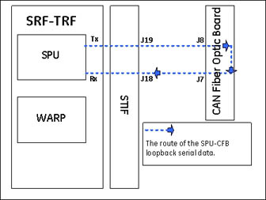

Proprietary to General Electric
Direction 5500113, Rev# 3
Discovery MR450 1.5T Service Methods
Module Version 2.0, Version Date 6/27/08
Proprietary to General Electric |
Diagnostics >> Hardware Location >> Magnet Room >> PAC Diagnostics Test
Illustration 1: PAC Diagnostics

This test verifies that the CAM chassis can send data to the CFB module over the CFB's fiber optic cables.
CFB Module
The SPU-CFB communication link
After the diagnostic is complete, a TPS reset is required prior to scanning.
Illustration 2: The Route of the SPU-CFB Loopback

Click [Calculate Time] to get an estimate of the time it will take to run the selected diagnostics.
Click [Run] to initiate test.
In this test, the SPU on the TRF board sends serial data to the STIF board where it is sent the CFB fiber optic cable. The CFB passes this test data and sends it back. The SPU verifies that the correct data is returned.
| NOTE: | The Test Options settings should not be changed from their default settings unless instructed to do so by a GE Healthcare engineer. There are very few circumstances when these settings ever need to be changed. |
Output values are judged pass or fail. In the event of failure, the details of the failure can be found in the GE System Log. In the case of errors you can click the 1st Error number to see the nature of the error. It is recommended that you view the GE System Log to view all the errors that were recorded.
If this test fails, perform the SPU to STIF Loopback to verify the PAC fiber optic communication link from the TRF (CAM chassis) to the STIF.
| ||||
| Prior to scanning, a TPS reset is required. | ||||